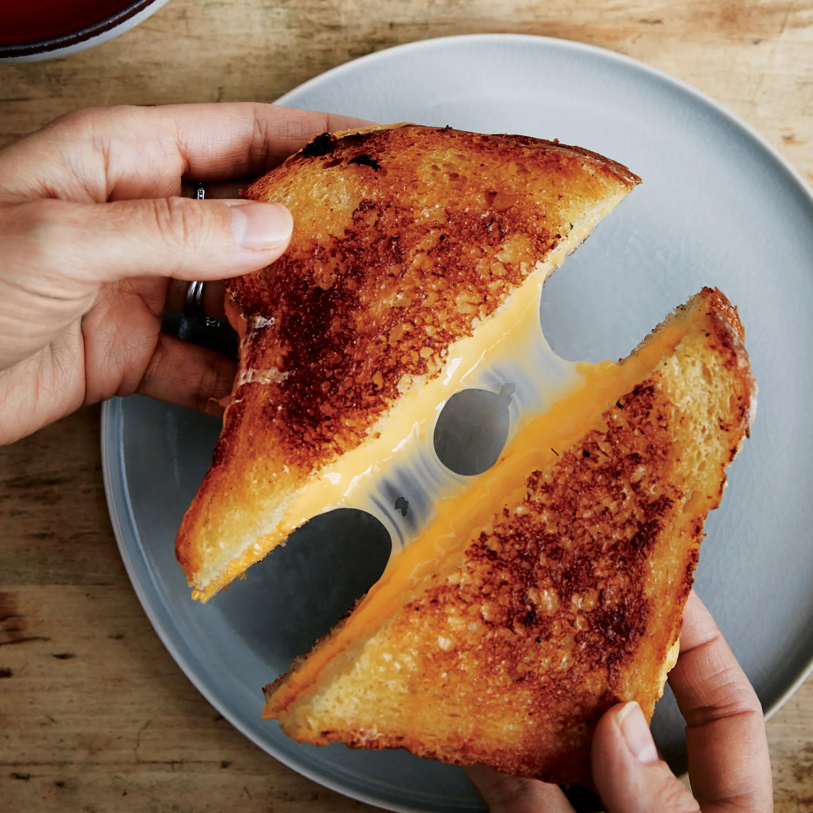

Home
Grilled Cheese

Description
A grilled cheese sandwich is a simple, warm comfort food made by grilling slices of bread with cheese in between. The bread is typically buttered on the outside for a golden, crispy texture, while the inside becomes soft and gooey as the cheese melts. It is often served alone or with soup.
Ingredients
- 2 slices of bread
- 2 slices of cheese (e.g., cheddar, American)
- 1 tablespoon butter
Steps
- Butter one side of each bread slice.
- Place one slice, buttered side down, in a skillet.
- Add cheese slices on top, then cover with the second bread slice, buttered side up.
- Cook over medium heat until golden brown, about 2–3 minutes per side.
- Remove from heat, slice, and serve warm.